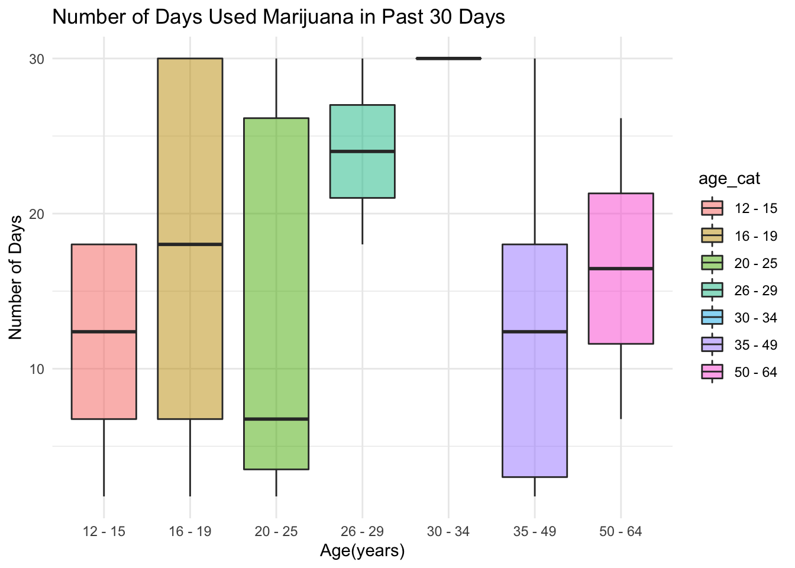

#load("data/NSDUH_2019.RData")
#nsduh_19 =
# PUF2019_100920 %>%
# janitor::clean_names() %>%
# select(questid2, age2, mr30est, catag6, newrace2, irmjage, mjrec, mrjmon,
# ymdelt, amdelt, irsex, eduhighcat, income, irmarit, coutyp4)
#write_csv(nsduh_19, file = "data/nsduh_19.csv")raw_data = read_csv("data/nsduh_19.csv")## Rows: 56136 Columns: 15
## ── Column specification ────────────────────────────────────────────────────────
## Delimiter: ","
## dbl (15): questid2, age2, mr30est, catag6, newrace2, irmjage, mjrec, mrjmon,...
##
## ℹ Use `spec()` to retrieve the full column specification for this data.
## ℹ Specify the column types or set `show_col_types = FALSE` to quiet this message.graph_fendi = raw_data %>%
filter(mr30est != 94 & mr30est != 97 & mr30est != 98 & mr30est != 99) %>%
mutate(mr30est = recode(mr30est, `91` = 0, `93` = 0))
graph_fendi =
graph_fendi %>%
mutate(
age_cat = ifelse(age2 == 1 | age2 == 2 | age2 == 3 | age2 == 4, "12 - 15",
ifelse(age2 == 5 | age2 == 6 | age2 == 7 | age2 == 8, "16 - 19",
ifelse(age2 == 9 | age2 == 10 | age2 == 11 | age2 == 12, "20 - 25",
ifelse(age2 == 13, "26 - 29",
ifelse(age2 == 14, "30 - 34",
ifelse(age2 == 15, "35 - 49",
ifelse(age2 == 16, "50 - 64", "older_than_65" )
)))))),
days30 = ifelse(mr30est == 1, runif(1, min = 1, max = 2),
ifelse(mr30est == 2, runif(1, min = 3, max = 5),
ifelse(mr30est == 3, runif(1, min = 6, max = 9),
ifelse(mr30est == 4, runif(1, min = 10, max = 19),
ifelse(mr30est == 5, runif(1, min = 20, max = 29),
ifelse(mr30est == 6, 30, 0)))))))Let’s expore the marijuana use pattern in the past 30 days of the survey.
graph_fendi %>%
group_by(age_cat) %>%
summarise(days = sum(days30)) %>%
knitr::kable(digits = 3)| age_cat | days |
|---|---|
| 12 - 15 | 113.507 |
| 16 - 19 | 500.609 |
| 20 - 25 | 294.958 |
| 26 - 29 | 46.577 |
| 30 - 34 | 30.000 |
| 35 - 49 | 73.937 |
| 50 - 64 | 34.221 |
| older_than_65 | 0.000 |
This table shows the cumulative numbers of days used marijuana in past 30 days in each age range. There were 56136 individuals participating the 2019 NSDUH survey. We can see that people who aged between 16 and 19 years accumulated the most number of days of marijuana using in the past 30 days of the survey, followed by those who aged between 20 and 25 years.
graph_fendi %>%
filter(days30 != 0) %>%
ggplot(aes(x = age_cat, y = days30)) +
geom_boxplot(aes(fill = age_cat), alpha = .5) +
labs(title = "Number of Days Used Marijuana in Past 30 Days",
x = "Age(years)", y = "Number of Days") +
theme(plot.title = element_text(hjust = 0.5))
This graph shows the distribution of the numbers of days used marijuana in past 30 days of each individual. Those aged between 16 and 25 years had the widest range, while people who aged between 26 and 29 years had the highest mean for number of days used marijuana in past 30 days.